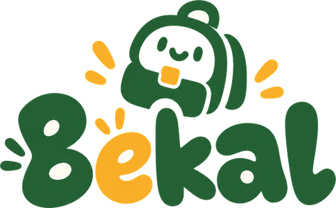

Semua bekal yang kamu butuh — dari ujian sampai usaha
Tryout & analisis AI, direktori kampus & beasiswa, workspace skripsi 30+ alat, kerja remote, finansial, sampai franchise & studio bisnis. Langsung di browser, tanpa bayar.
Empat pilar, 13 alat — semua di satu tempat
Lolos seleksi dengan latihan terarah
Sembilan kategori seleksi mengikuti pola soal terbaru. Kerjakan tryout → AI petakan kelemahan → latih yang perlu.
Dari halaman kosong sampai siap sidang
Isi judul & objek penelitian → BAB I–III ter-generate dengan sitasi nyata (Wikipedia, OpenAlex, Crossref), lalu di-humanize. Tidak mengarang sumber, tidak memalsukan data, ekspor PDF & Word.
Dari lulus ke berpenghasilan
Cari kerja remote yang mudah dilamar, atau mulai usaha dengan hitungan nyata: modal, BEP, dan kecocokan kota berdasarkan UMK resmi 2026.
Siap mulai? Semuanya gratis.
Daftar, pilih pilar yang paling kamu butuhkan hari ini, dan lanjutkan dari perangkat mana pun.
Apakah Bekal bisa dipakai gratis?
Ya. Semua fitur saat ini gratis dan langsung bisa dipakai di browser — tryout & bank soal, AI analisis, kuliah & beasiswa, workspace skripsi, kerja remote, finansial, franchise, studio bisnis, dan prompt studio.
Berapa banyak soal yang tersedia?
1.495+ soal terkurasi di 9 kategori: CPNS, PPPK, SNBT/UTBK, Kedinasan, BUMN, TNI/POLRI, Sertifikasi, TOEFL, dan IELTS — bertambah berkala.
Apa yang dianalisis oleh AI?
Pola jawabanmu per subtes, topik yang masih lemah, lalu rekomendasi belajar terarah supaya waktu latihan lebih efisien.
Apakah skripsi yang di-generate mengarang sumber?
Tidak. Sitasi ditarik dari sumber nyata (Wikipedia, OpenAlex, Crossref ber-DOI). Angka lapangan tetap milikmu — sistem tidak memalsukan data.
Lewat perangkat apa saja bisa diakses?
Browser HP, tablet, maupun laptop tanpa memasang aplikasi. Progres tersimpan di perangkatmu.